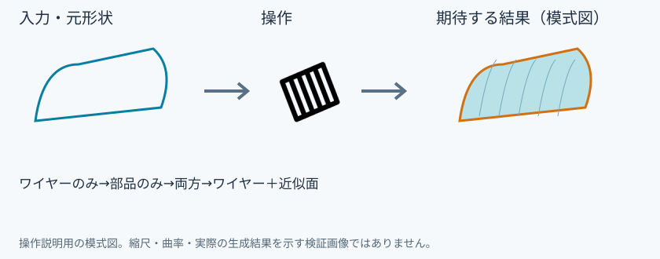
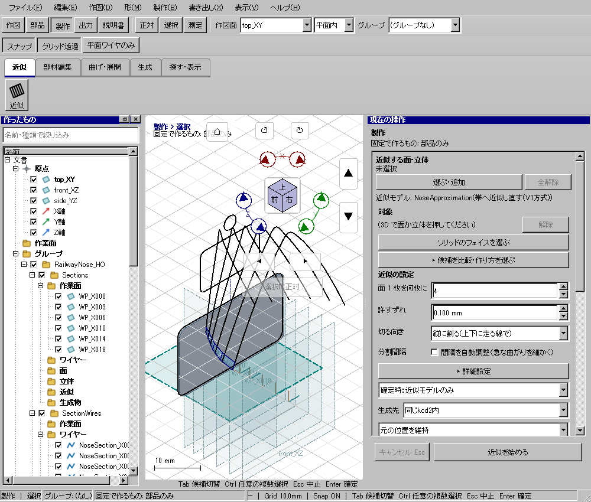

固定で作るもの
固定で作るもの
具体例: 次の固定生成で作る内容を変える

準備
確定した近似モデルを用意する
操作手順
- 固定で作るものを押す
- 状態表示を確認して必要な内容まで切り替える
設定: ワイヤーのみ→部品のみ→両方→ワイヤー＋近似面
結果を確認
次回生成する内容が変わる。この操作だけでは生成しない。
取消・やり直し
ダイアログの取消、またはペインの取消を使います。即時操作には未確定段階がありません。 確定済みの文書変更はCtrl+Z、やり直しはCtrl+Yです。保存・書出し済みのファイルはUndoの対象ではありません。
進めない場合
「現在状態を固定」で作るものを、ワイヤーのみ・部品のみ・両方の順に切り替えます。
対象欄と3Dの強調を照合し、必要な線・面・部品を各役割へ指定します。処理中は計算表示を確認し、取消が可能な処理は取消を使います。
Windows版の操作画面
